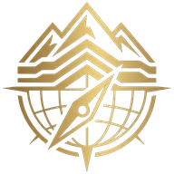

Shandal Geological Field Survey System · geologicalfieldsurvey.com
1

Shandal Geological Field Survey System · geologicalfieldsurvey.com
AI answers can be wrong. Check important results against the method on each tool page.